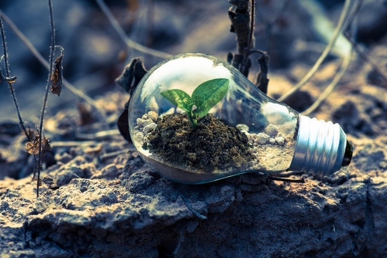
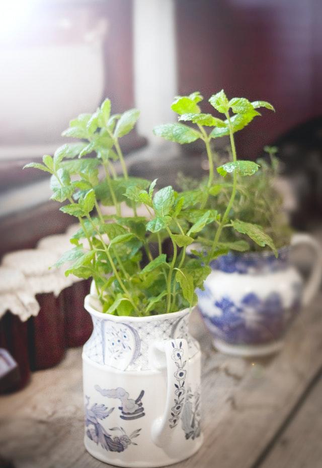
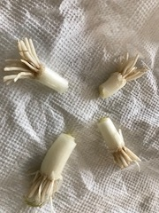
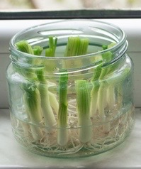
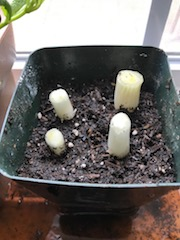
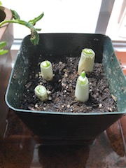
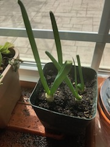
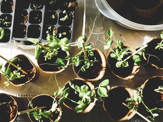

My Experimental Gardening with regrowing plants
Introduction
My name is Apala. I have several creative hobbies. Out of those hobbies, Experimental Gardening is one of my favorites. I enjoy creating and propogating new edible and decorative plants with seeds, cuttings and scraps. I find the process of growing them as a stress buster and therapeutic. On the rewarding side, we get the organic, fresh and healthy home grown edibles and decorative plants with minimum investment of my time and dimes.


Let's Dive In...
In this section, I will share about my "Experimental Gardening" with regrowing edible plants with scraps. One of the edible plants that is super easy to regrow from scraps is Spring Onions. You can regrow them with store bought spring onions. Here is the step by step instructions on how to regrow them.
Instructions :
- Cut out about 1-2 inches of the white part of spring onion, where the roots are.
- Place the roots part submerged in water, in a glass jar for a few days. This will allow the roots to encourage new growth.
- Once you see a new root at the bottom of these spring onion cuttings in water, then it’s time to transplant them into the soil.
- Take a small planter or plastic container with at least 3-4 inches in height. I like to reuse and repurpose the recyclable food containers. Drill drainage holes at the bottom.
- Fill your planter or container with potting soil mix. Place this on a saucer or a tray. Pour water in the saucer or tray and let the soil absorb the water.
- Make approximately an inch deep holes in the soil from the top of the soil level.
- Plant the root part carefully inside soil without disturbing the roots. Make sure the the top of the cutting is about half inch above the soil level.
- Water the planted cuttings by putting water in the outer container or saucer.
- Keep the container with cuttings indoors on a window sill with indirect sun or a shade location outdoors until a growth is established.





Which other scraps roots can regrow as plants for consumption...
There are various scraps that find their way into our compost bins or trash. Instead, giving them another chance to live and thrive by regrowing them is a win-win game!
Here are some of the other edible plants that can regrow from cut out roots and ends following the same instructions as above.
- Bok Choy
- Celery
- Fennel
- Garlic
- Lemongrass
- Leeks
- Onions
- Romaine Lettuce

A few lessons that I have learned along the way with my Experimental Gardening...
- Keep the regrowing plant away from a direct sunlight or they will dry out instead of regrowing.
- Sometimes experiments fail... If you do not see any signs of life after a week, try again.
- The taste of the regrown edibles may be a bit milder compared to the original ones
Check out these references and resources to learn more about regrowing edibles from scraps...
Vegetables to regrow from scraps
How to regrow fruits and how-to-regrow-fruits-vegetables
No-Waste Kitchen Gardening Book
Image Credits :
Image - Bulb with a seedling - Source :
https://www.pexels.com/photo/clear-light-bulb-planter-on-gray-rock-1108572/
Image - Mint plant growing in a Mug - Source :
https://www.pexels.com/photo/green-leaf-plant-977903/
Image - Variety of regrowing plants - Source :
https://www.pexels.com/photo/variety-of-green-plants-1105019/
© ®